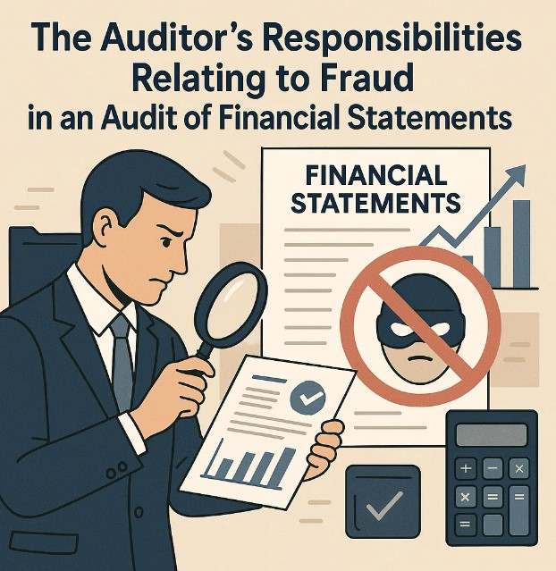

The Auditor’s Responsibilities Relating to Fraud in an Audit of Financial Statements
Fraud in financial statements is a significant concern that can undermine the reliability of financial reporting and pose a risk to investors, regulators, and stakeholders. The role of auditors in detecting and addressing fraud is critical, not just to comply with professional standards but also to maintain the integrity of the financial reporting process. In this blog, we will discuss the auditor’s responsibilities regarding fraud in the audit of financial statements, in accordance with the International Standards on Auditing (ISA), particularly ISA 240 - "The Auditor's Responsibilities Relating to Fraud in an Audit of Financial Statements."
Auditors are the gatekeepers of financial truth, tasked with uncovering fraud that can undermine the very foundation of financial reporting. Through vigilance and skepticism, they shine a light on hidden risks that others may overlook.
Understanding Fraud in Financial Statements:
Fraud in financial statements generally refers to intentional misstatements or omissions of amounts or disclosures in the financial statements to deceive users. This can include:
- Management fraud: Involves intentional manipulation or falsification of financial statements by management to meet performance targets or expectations.
- Employee fraud: Occurs when employees commit fraud through embezzlement, misappropriation of assets, or other dishonest activities.
ISA 240 Overview:
ISA 240 provides a framework for auditors to identify and respond to fraud risks during an audit. It emphasizes that while auditors are not responsible for detecting all instances of fraud, they must exercise due professional care to identify significant risks and perform procedures to respond to them.
Key Responsibilities of Auditors in Detecting Fraud:
1. Professional Skepticism:
Auditors are required to maintain professional skepticism throughout the audit. This means questioning the reliability of documents, records, and management representations and critically assessing the evidence obtained.
The auditor must not assume that management is honest and must remain alert to potential signs of fraud.
2. Risk Assessment:
One of the first steps in detecting fraud is performing a fraud risk assessment. Auditors are required to consider the risks of material misstatement due to fraud in the financial statements.
This involves evaluating both internal and external factors, such as management’s integrity, the industry’s financial health, and past incidents of fraud.
3. Consideration of the Risk of Management Override:
Management override of controls is a significant risk factor for fraud. Auditors are required to assess whether management might have the ability or motive to override controls, especially in areas such as revenue recognition, accounting estimates, and related-party transactions.
4. Design and Implementation of Procedures to Address Fraud Risks:
The auditor must design audit procedures that specifically address the risks of fraud. This might include:
- Testing the effectiveness of internal controls designed to prevent fraud.
- Reviewing journal entries and other adjustments to the financial statements.
- Confirming transactions with third parties.
- Conducting substantive testing to verify financial data and the integrity of transactions.
5. Communication with Management and Those Charged with Governance:
If fraud is suspected or detected, auditors are required to communicate the findings to management and those charged with governance (e.g., the board of directors or audit committee).
The communication should outline the nature of the fraud, its potential impact on the financial statements, and the steps being taken to address it.
6. Fraud and Legal Requirements:
In cases where fraud is identified, auditors must assess whether it constitutes a violation of legal or regulatory requirements.
If necessary, the auditor must report fraud to regulatory authorities, depending on the jurisdiction and applicable laws.
Limitations of the Auditor’s Responsibility:
Detection vs. Prevention: Auditors are responsible for detecting material misstatements due to fraud, but not for preventing fraud altogether. The primary responsibility for preventing fraud lies with management.
Auditor’s Scope: The scope of an audit is limited to the information available. Auditors are not expected to conduct a forensic investigation or review every transaction in detail.
Key Fraud Detection Procedures:
- Analytical Procedures: These procedures involve examining financial data trends and ratios to identify unusual patterns or discrepancies that might indicate fraud.
- Interviews and Inquiries: Auditors may interview employees, management, and others to understand business operations and identify red flags that could suggest fraudulent activities.
- Document Review: Carefully reviewing supporting documents like invoices, contracts, and financial agreements can help auditors spot signs of manipulation or false reporting.
Conclusion:
Auditors play a critical role in detecting fraud in financial statements, even though their primary responsibility is not to prevent it. By applying professional skepticism, assessing fraud risks, and designing appropriate audit procedures, auditors can identify potential fraud and ensure that financial statements provide a true and fair view of a company’s financial position. While the audit process can help uncover fraud, a robust internal control system, strong governance, and ethical management practices are essential in minimizing fraud risks.
Call to Action:
If you're an auditor or involved in financial reporting, it is crucial to stay updated on the latest auditing standards, like ISA 240, to strengthen the integrity of your audit processes. Fraud risks are ever-present, but with diligence and professional care, you can help mitigate their impact on your organization.